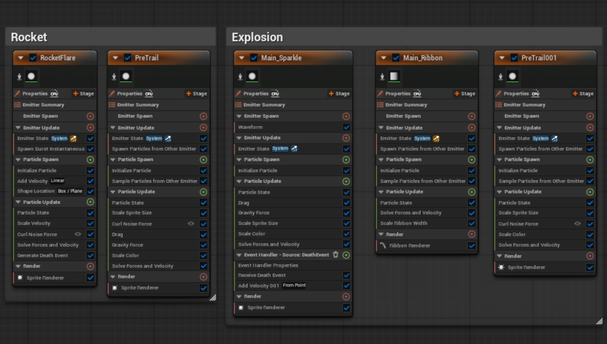
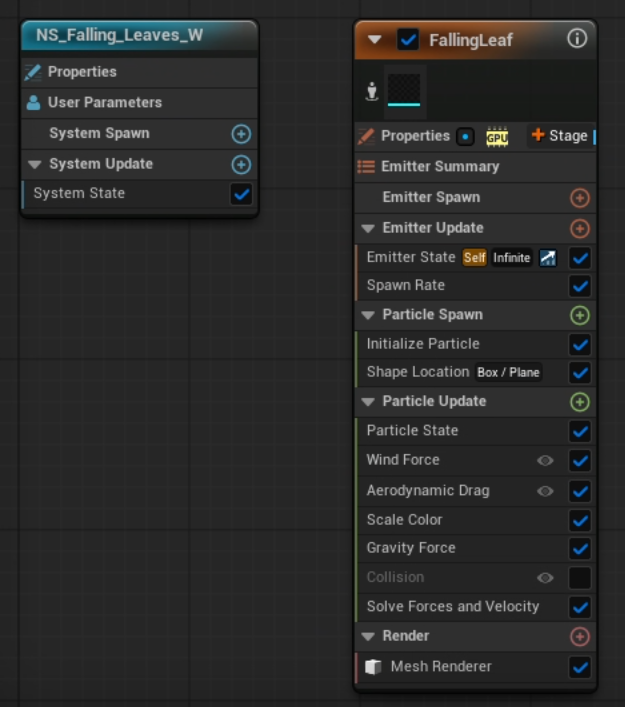
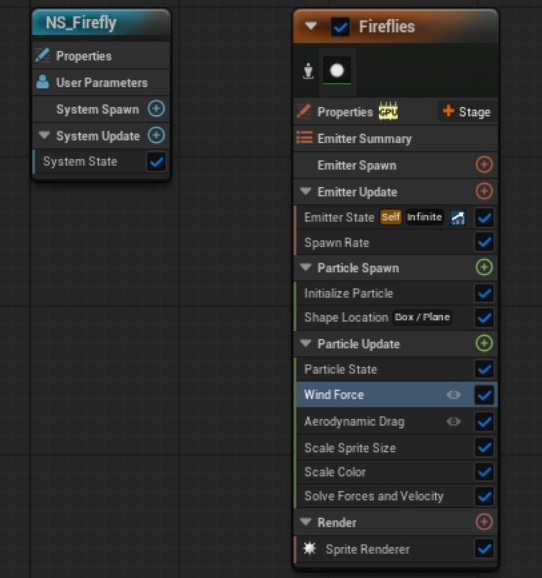
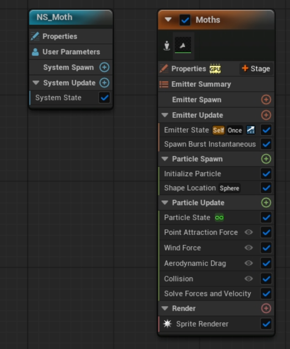
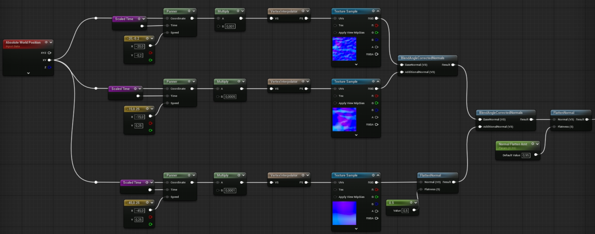

VFX & Shaders
Palace on the Isle
Main preview
Project Overview
An architectural scene based on the real life location Palace on the Isle in Warsaw, Poland. This project was a collaboration between a the Environment artist Suzanna Kwidzinska and myself. I was responsible for giving the environment life through vfx and shader work.
The art direction set by the artist was a romantic, realistic depiction of a nighttime scene in the palace gardens, with a focus on warm, atmospheric lighting and subtle, naturalistic effects. The goal was to create a moody and immersive environment that felt both magical and grounded in reality.
Fireworks
The firework VFX is the most eyecatching vfx of the scene
This niagara system uses four different particle emitters and one ribbon emitter.
Firework Rocket
The firework rocket is a particle with an upwards velocity.
In order to increase the realism, curl noise was applied to the particle motion in order to simulate the turbulence that a real firework would experience.
The sparks of the rocket are generated by a separate emitter and are affected by curl noise and gravity.
Explosion
When the firework rocket reaches its peak, it triggers an explosion emitter using a death event.
The explosion consists of a burst of particles that rapidly expand outward from the point of detonation.
The particles are affected by gravity and air resistance, which causes them to slow down and fall back to the ground over time.
The explosion particles are followed by a ribbon emitter and a particle spark emitter(simillar to the firework rocket) that creates a trailing effect as the particles move through the air.
Preview of fireworks in orange colour

Firework Niagara System
Leaves
The leaf falling VFX is a simple GPU particle system that
This particle system uses a mesh renderer with a simple plane mesh. Mesh rendering allows the leaves to realisticly interact with the turbulence in the air and tumble. All particles are spawned within a box volume that covers the approximate area of the tree's branches. The particles are then affected by gravity and curl noise, which causes them to fall and swirl around the scene in a natural way.
Preview of leaves falling

Leaf Niagara System
Moths and Fireflies
the moths and fireflies are effects that add life and smaller details to the scene.
Fireflies
The fireflies are a simple particle system that uses an emitter to spawn small, glowing particles that move around the scene in a random, erratic manner. The particles are affected by gravity and curl noise, which causes them to float and swirl around the scene in a natural way. The fireflies also have a slight glow effect applied to them, which makes them stand out against the darker background of the scene and adds to the magical atmosphere.
Preview of fireflies

Firefly Niagara System
Moths
The moths are a single emitter system the emits a burst of sprite particles. The particles are affected by a point attraction force, which causes them to move towards a point in the center of the system.
Drag and wind forces are also applied to allow the particles to move more erratically. A collision system is also in place to make the moths collide with the lamps.
Preview of moths

Moth Niagara System
Water Shader
The water shader is a simple custom shader that uses panning normals to create a realistic water surface effect.
The water shader uses three layers of panning normals to create a realistic water surface effect. The tree layers vary in scale and animation speed. Vertex Interpolation is used to optimize the shader performance with minimal impact on visual quality.
Preview of water shader

Water Material Normals
Key Learnings
This project taught me the experience of collaborating with another developer and to deliver a product based on a shared vision. If I had more time, I would have liked to explore more dynamic effects and shaders to further enhance the atmosphere of the scene, such as dynamic weather effects or more complex water interactions.